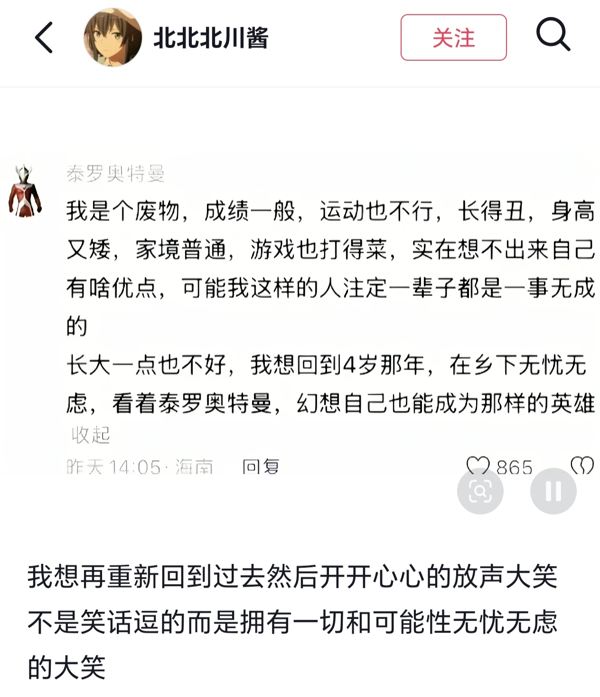

# 做题
来源 b 站
做不出题的恐惧化为怨恨
缠绕他们一辈子
# 口哨
来源抖音
生命是一万次春和景明
# 无人
来源 b 站
“浮生难免三千苦，硬起心肠莫沉沦”
真正的恐怖从来不是被追逐，而是发现所有呼啸的过往里，从未有人真正呼唤过你的名字
# 才子佳人
来源鲁迅《上海文艺之一瞥》
君子是只读四书五经，做八股，非常规矩的。而才子却此外还要看小说，例如《红楼梦》，还要做考试上用不着的古今体诗之类。这是说，才子是公开的看《红楼梦》的，但君子是否在背地里也看《红楼梦》，则我无从知道。有了上海的租界，—— 那时叫作 “洋场”，也叫 “夷场”，后来有怕犯讳的，便往往写作 “彝场”—— 有些才子们便跑到上海来，因为才子是旷达的，那里都去；君子则对于外国人的东西总有点厌恶，而且正在想求正路的功名，所以决不轻易的乱跑。孔子曰，“道不行，乘桴浮于海”，从才子们看来，就是有点才子气的，所以君子们的行径，在才子就谓之 “迂”。
才子原是多愁多病，要闻鸡生气，见月伤心的。一到上海，又遇见了婊子。去嫖的时候，可以叫十个二十个的年青姑娘聚集在一处，样子很有些像《红楼梦》，于是他就觉得自己好像贾宝玉；自己是才子，那么婊子当然是佳人，于是才子佳人的书就产生了。内容多半是，惟才子能怜这些风尘沦落的佳人，惟佳人能识坎坷不遇的才子，受尽干辛万苦之后，终于成了佳偶，或者是都成了神仙。
中国文青这辈子离不开三件事：
- 嫖娼
- 圣化妓女
- 绿帽幻想
# 吉尔伽美什
来源知乎
死亡是凉爽的夏夜，可供人无忧地安眠。
乌鲁克人昨日看错我吉尔伽美仕，今日又看错了；或许明日还会看错。可是我仍然是我。
# 即将上场
来源知乎
人们会用神圣与沉默去准备一件好事，会用污秽与放纵去准备一件坏事
# 告别张雪峰
来源 b 站
君埋泉下泥销骨，我寄人间雪满头
# 处决暴恐
来源 b 站
我们绝不拿弱者遭受的伤害去慷慨施暴者。
# 烈焰升腾
来源 b 站
如果把责任推给 “小部分的他们” 就可以原谅 “大部分的他们”，那我愿意做 “小部分的我们”
# 泰罗奥特曼
来源抖音
